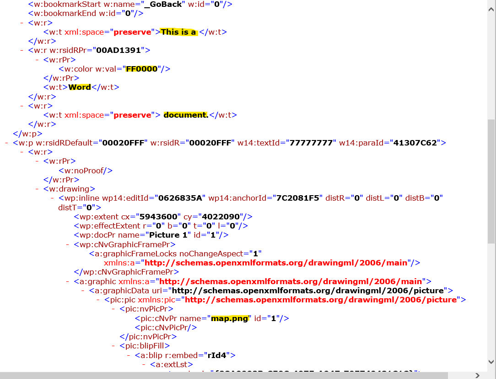
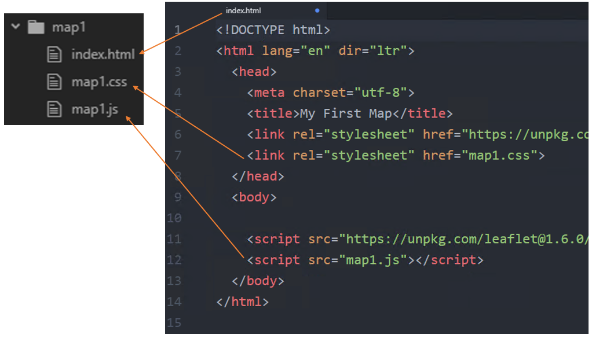
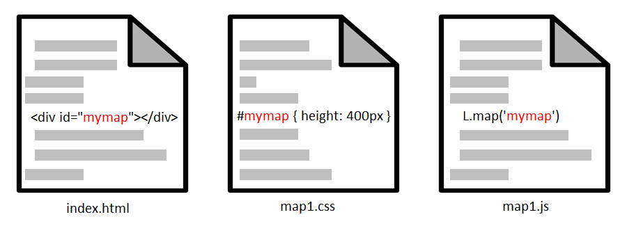

Lesson 11
Webpage Basics
Table of Contents
- Introduction
- Webpages and Web Browsers
- URLs and Files
- HTML, CSS, and JavaScript
- HTML-CSS-JS for Web Maps
- Summary
- Other Learning Resources
Terms: webpage, source code, web browser, Hypertext Markup Language (HTML), Cascading Style Sheets (CSS), JavaScript
Introduction
This is a Web GIS beginner’s guide to webpages. The information in this lesson is the foundation for understanding how webpages work and how to code your own web maps. The focus will be on the three computer languages used in webpages—HTML, CSS, and JavaScript—and how web browsers interpret these languages to display a webpage.
The goal of the following lessons is to give enough background on HTML, CSS, and JavaScript that you would be able to follow a basic guide to Web GIS JavaScript libraries offered by Google, Esri, Leaflet, and others.
Your goal should be to understand the concepts, not memorize code.
Webpages are documents displaying information in the form of text, maps, images, videos, and other media content. Webpages are composed of source code written in computer languages that give a web browser instructions for how the webpage should look and behave. A web browser reads the source code of a webpage document and displays the output to the user. The output is a rendered version of the document, meaning the browser interprets the source code to determine how to display the document, e.g., what font color and size or where to show an image.

Figure 1. The job of the web browser is to retrieve a document from a URL, interpret the document’s code, and display the rendered webpage in the browser window for the user to see, including all linked images, videos, and other media.
Webpages and Web Browsers
If you are reading this lesson, you might not have much experience with creating webpage documents from scratch, but there is another type of document that you have probably created many times: a Word document. To understand how webpages and browsers work, let’s first look at how a browser is similar to a word processor, Microsoft Word.

You can follow along by downloading the example document.
Opening the file in Word shows a rendered document with formatted text “This is a Word document” and an image of a map.

Figure 2. A document rendered by Microsoft Word. The way a word processing program renders a document is similar to how a browser renders a webpage.
Now let’s look behind the scenes in the docx file. If you rename the file from New Document.docx to New Document.zip in Windows File Explorer, you can open the zip file and see that the Word document is actually a collection of files and folders.

_rels docProps word [Content_Types].xml
In New Document.zip, browse into the word folder. These files contain the code that tells Word how to display the document with the correct content (fonts, colors, graphics, etc.). Find document.xml and open it with Edge or just look at the screenshot below. The highlights in the screenshot show some recognizable text within the code—“This is a Word document”, the color code FF0000 to make “Word” red, and a reference to the map image file.

Figure 3. This document is written in a language called XML. It is a file included in a Microsoft Word document that tells the program how to display the document.
Note that the map image is stored as a separate file, and the file document.xml only has a piece of code that points to the image file. Therefore, Word will read document.xml for instructions for how to display the document, and when it gets to the code pointing to the image, Word will look for the image file and display it within the document. In this example, the image is referenced with its original file name map.png. We can find this image file in the word\media folder, renamed to image1.png.
The word processor’s job is to assemble and make sense of all of those different files and folders in order to display the content to the user. This is how a web browser works when it assembles the various webpages and graphics that make a website. Instead of opening a document file saved on your computer, the web browser opens a document online via a URL.
URLs and Files
The URL is an address to another computer (a web server) on the Internet, and to a specific document on that web server, for example https://example.com/index.html. The document in this case is named index.html, and it contains the code that the browser will use to display the text, download and display images, and follow any other instructions needed to correctly display the webpage.
If you omit the file name from the URL, the web server will assume you want the default document, which is often index.html. Therefore:
https://example.com
is the same as:
https://example.com/index.html
The .html refers to Hypertext Markup Language, one of the main languages that browsers use to interpret webpage documents. The two other languages are CSS and JavaScript.
HTML, CSS, and JavaScript
While there are many computer languages used on servers to generate webpages and applications on web servers, only three languages are used to deliver the webpage to the client browser:
- Hypertext Markup Language (HTML) gives the browser information about the content and what resources to download, e.g., images, CSS files, and JavaScript files.
- Cascading Style Sheets (CSS) contain rules for how webpage content should be presented, such as fonts, colors, and alignment.
- JavaScript (JS) is a programming language that allows us to give instructions for how the browser should react to certain events, such as a click or scroll.
In short, HTML, CSS, and JS are the content, style, and behavior of a webpage, respectively.
The three languages are often embodied in the website as three separate files:
index.html(standard file name)something.csssomething.js
They are linked together through the HTML file. Remember how the Word document had code to reference a separate image file? HTML files can do the same thing. HTML uses special “elements” (more on elements in another lesson), link and script, which refer to the CSS and JavaScript files, respectively. When a browser reads your webpage’s HTML, it will encounter these elements and download the files they reference, giving the browser additional instructions on how the webpage should look and act.

Figure 4. An HTML document references other files. The link and script tags allow you to specify CSS and JavaScript files to include with your HTML.
HTML-CSS-JS for Web Maps
HTML, CSS, and JavaScript each serve roles in displaying a web map on a webpage.
- HTML creates an “invisible box” that will be like a canvas on which the map is drawn.
- CSS sets the dimensions of the box to control the size of the map on the screen, as well as the appearance of popups and other visual components of the map.
- JS retrieves data from web services, draws layers on the HTML canvas, listens for user clicks, zooms, pans, etc.

Figure 5. Some of the roles that HTML, CSS, and JavaScript play in displaying a map on a webpage.
In terms of how those roles translate into code in each HTML, CSS, and JS file, each map displayed on the webpage has a unique id that is referenced in the HTML. Then CSS and JS work together to control the appearance and behavior of the map.

Figure 6. The same id will be used to identify the map in the HTML, CSS, and JavaScript. The id is a unique name that you create, though usually a simple map will do.
All three components are needed.
- Without the HTML, there would be no
divelement to draw the map in. - Without the CSS, the
divcould exist in the HTML, but it would not have a height, and would therefore be invisible. - Without the JS, the
divcould exist in the HTML with a height specified in the CSS, but there would be no map because the layers weren’t retrieved and drawn on the map, and users could not click or scroll on the map.
The browser reads the three languages and combines the instructions to create a seamless webpage that hides the complexities behind the scenes.
It is possible to put CSS into an HTML file directly with the style tag, and JavaScript can be written between script tags in and HTML file. Doing so would leave you with a single .html files and no separate .css and .js files. However, in our assignments, we will always put scripts and styles in separate files, meaning each assignment will have an index.html, a .css file, and a .js file.
Summary
A web browser opens a webpage via a URL and renders the content on screen. The web browser reads the webpage’s source code for instructions on how to display the webpage and react to user interactions, such as mouse clicks. The languages used to instruct the browser are HTML, CSS, and JavaScript.
The next lessons on HTML, CSS, and JavaScript will focus on understanding and writing source code, in preparation for developing our own web maps.
Other Learning Resources
- Codecademy - Introduction to HTML: Elements and Structure
- This is a long lesson but doing only the first few parts could still be helpful.
- Mozilla - Getting Started with the Web
Back to Lessons